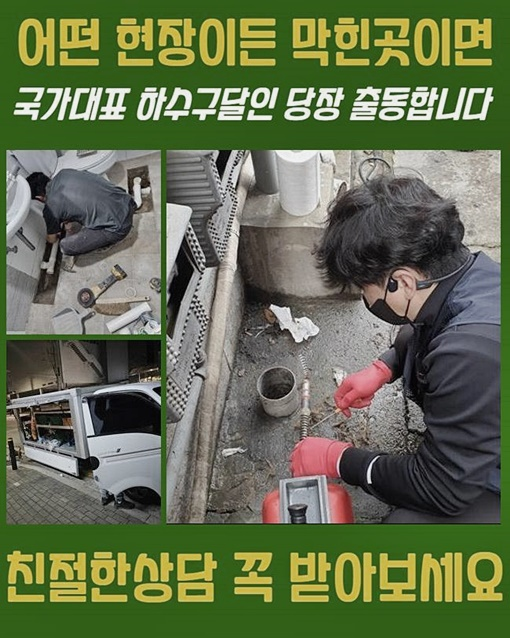
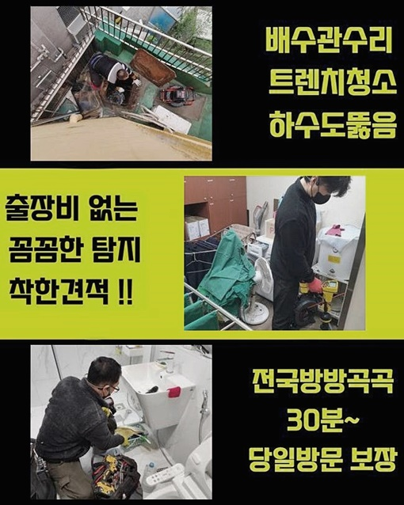
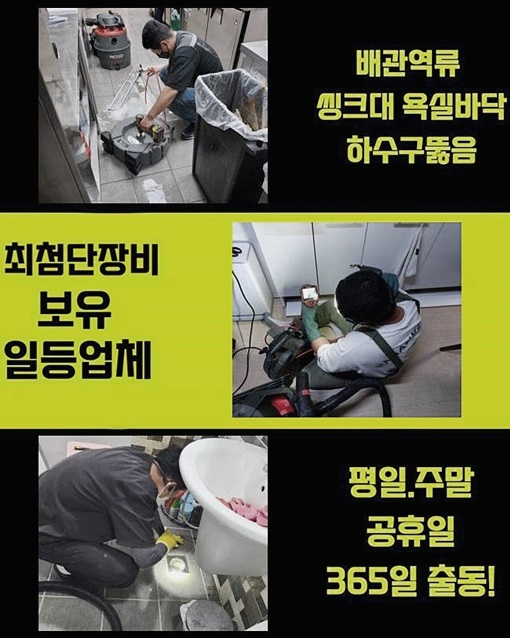
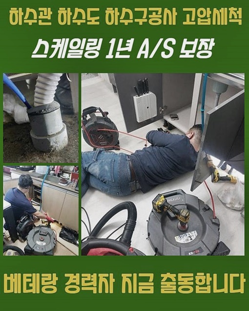
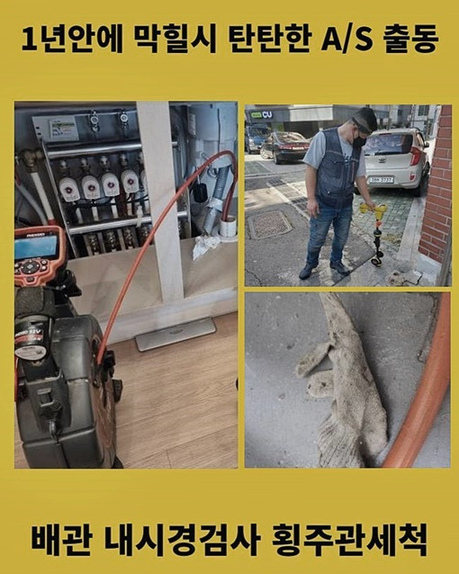
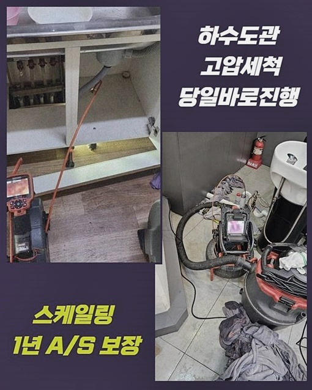

🏠 수원 신안동씽크대막힘 우만동 고압세척비용 누수공사
용인시 처인구 배관막힘 전문 시공 후기

📋 작업 개요
- 위치: 용인시 처인구, 수원시 영통구, 화성시 동탄
- 서비스 유형: 배관막힘, 하수구청소, 누수수리, 고압세척, 내시경점검
- 작업 일시:
- 업체명: 하수구수사대 (010-5615-2118)
🔍 문제 상황
수원 신안동씽크대막힘 우만동 고압세척비용 누수공사
평상시대로 지내다가 하수구에서 막힘증세가 발발되면 불편함이 느껴질텐데요
하수구가막히면 물이흘러가지 못해 막힘증상이 발현되게되는것이죠
이번엔 상가를 운영하고계시는 고객님이 역류증상이 발생된것같다며 연락을주셨죠
하수도끝까지 역류해버린 상황임을 말씀해주셨답니다
점검을해보기위해 신속한 내방으로 방문했어요 하수구깊은곳은 살피진않았지만 확실한건 하수도에 물이찬상태이죠
아래쪽부분에 많은양으로 오염물들이 쌓이면서 배관막힘 증세가 발발된것으로 판단이가능했죠
악취문제도 발생되고있는 상태였다보니 문제상태가 심각했어요
점검을해보고자 흡입장비를 준비했죠 넘친물을 제거하기위하여 펌프를이용해 제거해보기 시작했답니다
역류한물이 조금은 제거되었죠 넘쳐버린물을 빼내야만 배관카메라를 써서 하수구내부를 들여다볼수있죠
배관카메라로 하수구속을 살필준비를 마칠수있었어요
배관안속을 살펴봤더니 잔여물질들이 쌓여있는걸 확인할수있었죠
조금더 진입한후 살펴보고싶었지만 이물질로인해 내부로 진입하는것이 어려웠습니다

🔎 원인 분석
💡 전문가 진단: 정밀 진단 장비를 사용하여 슬러지의 고착 여부를 판명하고 타격/세척 작업을 실시했습니다.
이럴땐 무리해서 투입하려고 하는것보다는 잔여물질부터 소거시켜서 통수해보는것이 우선이랍니다
막힌상태마다 각기다르기에 이러한부분에서 작업경력을 요구하게됩니다
초입부에 잔여물들이 쌓여있었기에 제거작업을 진행하기로했죠
샤프트기계를 통하여 초입부의 오염물들을 제거시켰어요
통수를해서 분해기계를 내부로깊숙히 들어갈수있도록 해주었죠
분쇄도구는 간략하게 뾰족하게 이루어진것이 아니며 사슬형태로 이루어져있죠
노즐부분이 360도돌며 하수관의 이물을 제거시키는 방식이랍니다
배관속에손상을 입히지않으면서 제거할수있어요
분쇄장비를 비롯하여 여러장비가 있답니다 막힌정도의 따라서 알맞은기계를 활용해야해요
과도하게 사용하다간 배관이깨져서 2차문제가 발현될수있죠
고압세척기로 진행하지않아도 대다수의 오염물을 샤프트장비로 제거할순있어요
그렇다고하더라도 이번현장처럼 심각한경우에는 샤프트장비만으로 제거하기는 어렵답니다
간혹하여 관리소같은곳의 사장님께 부탁해서 하수도막힘을 처리하려는 고객님들도 있으실겁니다

🔧 작업 과정
기술자라면 문제가없을순 있지만 좋지않은 업체의경우 하수구입구주위만 뚫으려고하기에 저희에게로 재방문을 신청하시기도해요
이물제거를 진행할때 카메라기기도 같이투입해 배관내부를 체크하면서 이물질들을 제거할수있었죠
스켈링과정에서 무조건 하수구카메라를 통하여 하수구상태를 체크하며 작업해야만 한답니다
굳은이물이 분쇄장비를 통하여 떼어지며 소거되는것을 확인했답니다
배관내벽쪽을 청소하기로했죠 청소가 진행되면서 단단한고착물로 막혀있었던 배관가운데가 뚫리게되면서 통수가되었어요
또다른 기계들이 진입가능한 공간을만들었답니다
고착된이물이 발견되었으므로 오늘장소에서는 고압세척장비를 사용해서 진행해야만해요
자동자쪽에 장착되어있는 고압세척도구로 쌓인 잔해물질들을 제거해보면되죠
슬러지때문에 빈공간없이 막힌 상황이다보니 잔해물을 밀어내면서 제거해주면되요
고압세척과정은 이물소거외에도 확실하게 배관청소까지 가능합니다
그치만 배관의내구도를 고려치못하고 진행할경우 강한수압력이 작용하여 버티지못하고 깨질수가있어요
파손되면 공사문제로까지 진행될수있는데요 이러한일이 발생되지않게 내부상태를 확인하면서 작업해드리고있어요
기계를이용하여 잔여물이있는 위치를 신속하게 제거하면됩니다
이물이흘러나오며 막힘문제가 해결되는것을 확인할수있는데요
하수관에 흐르도록 내버려둘경우 연결된하수구에 이물이 퇴적되며 재발하는일이 일어나게됩니다
그러므로 이물질들을 건진후 따로처리해봐야 한답니다 작게분해되어 빠져나온 잔여물들이 상당량으로 많았답니다
원활한분쇄가 이뤄지지 않은부분을 처리해보기위해 밑으로 분해장비를 투입시켜 제거하면되겠습니다
내시경도구를 통해 배관속을살피면서 상황에걸맞게 작업하고있으니 염려않으셨으면 좋겠습니다
쌓인석회물을 말끔히 분해한뒤 석션을사용해 남겨진것들을 제거할수있었죠
청소작업시 살펴봐야할것은 카메라장비로 들여다보았을때 잔해물이 발견되지않아야 하는거랍니다
안일하게 작업을하면 재차막힘증세가 일어나는데요 배수관에서 맑은물로 흘러나오게끔 진행해드렸어요


✅ 작업 완료
배관속에 가득차있던 잔해물이깔끔히 제거된모습을 볼수있었죠
이러한문제가 발생되지않도록 미리점검해 세척해보시는걸 권장드렸어요
많은하수들이 지나가는 통로이기때문에 주기적인 관리를통해 배수구를안전히 사용해보세요!
대한민국이라면 60분안으로 도착해드릴수있고 분명한 수립계획으로 진행하고있기에 안심하시길 바라요
이밖으로도 궁금증이 풀리지않았다면 전화하시면 상세히 응대해드릴테니 마음편히 연락해보세요!
막히는현상은 방치하게될경우 심각해질수있사오니 방치하지말고 문제를 발견한즉시 대처하실것을 권장드리겠습니다



⚠️ 하수구 배관 막힘 예방 및 관리 가이드
- ✅ 머리카락, 비닐, 물티슈 등 물에 분해되지 않는 이물질은 절대 흘려보내지 마세요.
- ✅ 기름기 많은 식기는 설거지 전 키친타올로 먼저 기름때를 닦아내세요.
- ✅ 주기적으로 배수구에 뜨거운 물을 가득 부어주어 유지방 고착을 방지하세요.
- ✅ 작업 후 1년 이내 재발 시 무상 A/S 보증 서비스를 제공합니다.
💡 핵심 정리
- 확실한 장비 작업(내시경 점검 및 샤프트 스케일링)으로 원인을 뿌리 뽑습니다.
- 작업 후 1년 이내에 동일한 부위 재발 시 100% 무상 A/S 서비스를 보장합니다.
- 서울 · 경기 · 인천 전 지역에 24시간 언제든 긴급 출동할 수 있도록 항시 대기 중입니다.
❓ 자주 묻는 질문 (FAQ)
🚨 용인시 처인구 배관막힘 문제로 고민이신가요?
정확한 원인 진단과 확실한 시공으로 재발 없는 해결을 약속드립니다.
24시간 긴급 출동 | 서울 · 경기 · 인천 전지역 | 1년 내 재발 시 무상 A/S